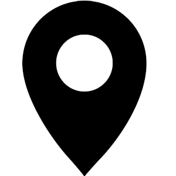

INFORMATIONS PERSONNELLES
Date de naissance
01/09/1991
Nationalité
Tunisienne
Etat civil
Marié
lANGUES
Français
Langue courante
Anglais
Niveau Professionnel
Arabe
Langue courante
PERMIS DE CONDUIRE
Permis A,B
CENTRES D'INTERETS
Sport
Voyage
|
Mohammed Yassine
Dabboussi
Développeur Informatique |
|

|
28 rue désirée clary 13002 Marseille
|
|
|
06 23 83 27 17
|
|
|
mohammed-yassine.dabboussi@laplateforme.io
|
|
|
Expériences professionnelles
|
Juillet 2022 – Aout 2022 :
Agent de saisie et coordinateur à Consulat général de Tunisie| Marseille, France
|
-Gestion du référendum constitutionnel tunisien de 2022
-Traitement de la base des données des employés
-Gestion de la salle d’opération
-Formateur des responsables des bureaux de vote
|
Décembre 2019 – Juin 2022 :
travailleur libre | Marseille, France
|
-Chauffeur livreur chez les sociétés Cogepart et Star Services
-Gestionnaire de résidence : Loc Habitat Marseille (gestion des réservations, inspection, gestion des logements)
-Livreur chez les restaurants : Nikki Sushi et Moshi Moshi
|
|
Septembre 2017 – présent : Auto-entrepreneur | Marseille, France
|
-Gestion d’entreprise évènementiel en Tunisie
-Gestion des employés
-Gestion de projet (budget, planning...)
-Gestion des clientèles
|
Février 2015 – Mai 2015 :
Stagiaire à Cynapsys IT Hotspot | Ariana, Tunisie
|
-Développement d’un site web
|
Mars 2014 – Mai 2014 :
Stagiaire à TTA (Agence de voyage) | Tunis, Tunisie
|
-Web designer
|
Juin 2012 - Aout 2012 :
Stagiaire à Medianet |Ariana, Tunisie
|
-Développement d’un site web
|
|
Formations
|
2022 – Présent :
La Plateforme | Marseille, France
|
-Starter
|
2022 – 2022 :
Simplon | Marseille, France
|
-Extended Apple foundation program
|
2016 – 2017 :
Université d’Aix Marseille | Marseille, France
|
-Master 1 Image et Systèmes (Diplôme non obtenu)
|
2012 - 2015 :
institut privé des hautes études | Tunis, Tunisie
|
-Licence fondamentale en Informatique et multimédia
|
2009 - 2012 :
institut supérieur de gestion | Tunis, Tunisie
|
-Licence fondamentale en Informatique de gestion
|
|
Baccalauréat:
|
-Sciences de l’Informatique
|
|
Compétences
|
|
Développement Web :
|
-HTML, CSS, JavaScript, PHP, Python
|
|
Développement backend :
|
-C, C++, Java, PHP
|
|
Développement Mobile :
|
-Swift, iOS
|
|
Base de données :
|
-MySQL, SQL Server
|
|
Systèmes d’exploitation :
|
Unix, Linux, Windows, Mac OS
|
|
Bureautique :
|
Word, Excel, PowerPoint
|
|
Management :
|
Gestion d’entreprise, Planning, gestion des ressources
|
|
|